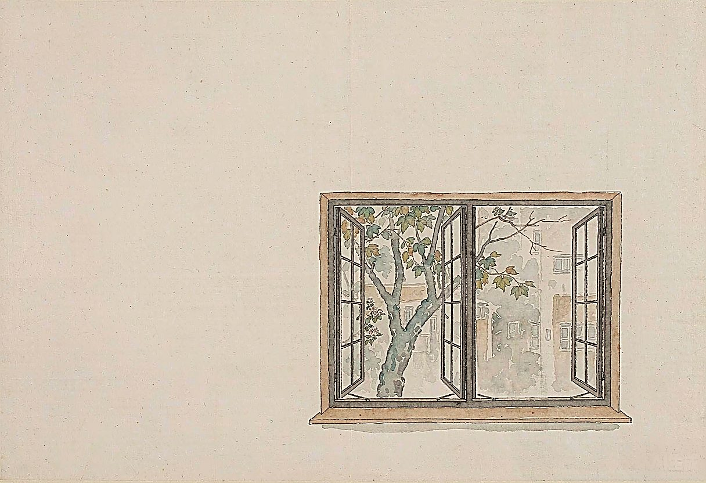

我的家，就住在杨浦区的东北角，长白居住小区，沿街一幢崭新的楼房里。平时，我喜欢倚着窗口，向外眺望。
窗外一幅幅美丽的图画映入眼帘，给我带来无穷的乐趣和遐想，我爱我家的窗口。
你看，春天来了，树木悄悄地绿了。
沿街清秀挺拔的梧桐整齐地挺立着，好像庄严的卫兵守卫着新村；小草从地底下伸出头来，染绿了新村房前宅后数不清的草坪。
朝街心花园的方向望去，那一片片、一簇簇蓝色的、紫色的、雪白的、粉红的、玛瑙似的不知名的花儿，轻盈娇艳，散落在草丛里，像眼睛，像星星。整个新村就像置身于绿色的花的海洋。
在拥挤的城市里，能有这么大的绿化面积，这在全国都是小有名气呢！总书记的“绿化上海，造富于民”的伟大号召，在这里已经成为现实。
我爱新村沁人心脾的空气，我爱绿色的优美新村。
清晨，东方晨曦微露，朝霞升起来了，霞光渐渐映红了窗前的一条街。
街上装修一新的农贸市场热闹起来了。一排排整齐清洁的摊位，一声声抑扬顿挫的叫卖声，正热情地迎接前来采购的人们。
市场里鱼儿欢跳、家禽鸣叫，一片兴旺发达的景象。那边，绿油油的青菜、黄灿灿的韭芽、雪一样洁白的萝卜、红得透亮的番茄，各色瓜果蔬菜应有尽有。人们挎着沉甸甸的篮子，脸带发自内心的微笑，满意而归。大家都交口称赞：“小小菜篮子，反映出大好形势。这是市政府菜篮子工程给我们带来的繁荣。”
夜幕降临了，我家窗口对面的文化馆、图书馆的霓虹灯亮了起来。劳动了一天的人们，从四面八方涌向这新建的文化娱乐中心。他们，有的在歌舞厅里随着轻快的乐曲翩翩起舞；有的在观看各种引人入胜的录像，人们尽情地享受着新村美好的夜晚。明天他们将以更充沛的精力投入新的战斗。
透过图书馆宽大的茶色玻璃，可以看到另一番动人的景象。这里有风华正茂的青年，也有两鬓染霜的老人，他们正孜孜不倦地在知识的海洋里遨游，在科学崎岖的山路上攀登。为了中华的崛起，为了祖国的强盛，他们正在顽强的拼搏……
——这真是一幅美丽动人的新村夜景！
我爱我家的窗口，它犹如一幅幅美丽的彩色画卷，它是杨浦美丽的缩影。它绚丽多彩、生机勃勃、日新月异、充满希望！它将多少热情注入了我幼小的心灵！
啊，窗口，我爱窗口！
啊，杨浦，我爱杨浦！
（搬入延吉新村新房不久，为正在读小学三年级的女儿参加学校朗诵比赛而写，比赛得了奖）